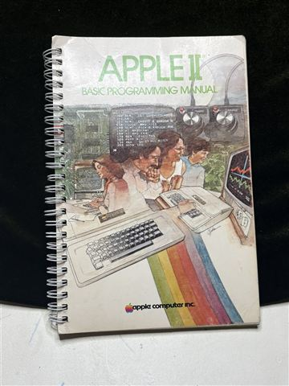
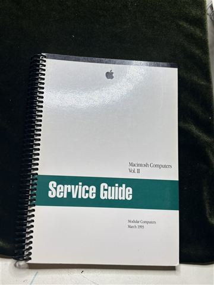
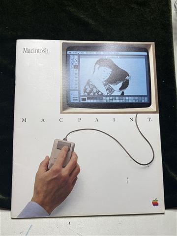

Apple Pascal — Operating System Reference Manual
Comb-bound. Cover rubbing, creases and old rear price stickers. Printed sticker prices are not resale evidence.
$18.00USD · shipping extra
Welcome to my little manual exchange! Mostly old Apple and Mac stuff, with a few other finds. Pick the copies you want, put them in your cart, and email me your list.



Pick a category, search the shelf, or just have a look around.
60 entries
Comb-bound. Cover rubbing, creases and old rear price stickers. Printed sticker prices are not resale evidence.
Illustrated cover; comb-bound. Cover wear and creasing. Exact printing not established from covers.
Comb-bound; cover creases and edge wear. Early layout without Macintosh banner.
No matching reverse supplied. Separate from later Plus copy.
Comb-bound; light cover wear and a projecting insert/page at top.
No matching reverse supplied. Check contents and inserts.
Paper cover; light surface wear and small marks.
Photographed in plastic wrap; wrap is wrinkled. Factory seal and unused status are not verified.
Paper cover; visible creasing.
Second front photographed; confirm separate physical copy. No reverse matched.
Foldout/reference card; 1987 copyright visible on reverse.
Foldout/reference card; 1986 copyright visible. Light marks.
Only front visible. Could be another copy or another view of an earlier card.
Do not count or sell as an additional card until physically checked.
Thin booklet; corner and surface wear.
No reliable standalone price found after targeted search.
Booklet; cover spots, wear and light creasing.
No reliable standalone price found after targeted search.
Comb-bound; geometric artwork. Cover wear and dark scuff/mark near lower front.
No dependable standalone sold price found; hardware bundles excluded.
Comb-bound; geometric artwork. Rear lower-corner crease.
No dependable manual-only sale found; modem hardware prices excluded.
Comb-bound; horizontal-line cover with room photograph. Light age wear.
Comb-bound; computer photograph. Cover edge wear.
Matching listings surfaced but no dependable standalone price extracted.
Comb-bound. Version 5.0 printed on cover; visible age wear.
No usable exact-edition resale history found.
Thin lined-cover supplement. Wear at edges/corners.
Stapled/paper guide; keyboard and cable cover photograph.
Comparable includes extra paperwork; this offer is the pictured guide.
Thin guide; hand pointing to Apple IIe on cover. Cover wear.
No reliable standalone sold price found.
Thin lined-cover manual; drive photograph, age toning.
Paper manual; wide-carriage printer subtitle/cover. Light wear and toning.
Keep separate from spiral ImageWriter manual; verify subtitle on title page.
Thin lined-cover supplement; magenta/yellow card artwork.
Manual-and-supplement bundles are the price comparison.
In wrinkled plastic. Factory seal not verified.
3024 and 3025 appear to be repeated front views of one wrapped copy; not counted twice.
Green cover; comb-bound. Cover rubbing and edge wear.
No reliable DOS 3.2-specific sold price found. Do not use DOS 3.3 as an exact match.
Comb-bound; orange disk-stack artwork. Visible cover wear/creasing. DOS revision needs title-page confirmation.
Dealer comparable is 1981 DOS 3.3; do not assume identical printing.
Comb-bound; computer drawing with rainbow bands. Visible edge/corner wear.
Verify foldout schematic and addenda before describing complete. Signed-manual auction prices excluded.
Comb-bound; multicolor circuit artwork, cover wear.
Matching sealed manual listing found; dependable price not extracted and condition differs.
Comb-bound; abstract cover artwork. Price stickers and age wear.
Foldout/reference card; 1988 copyright on reverse. Light surface wear.
Comb-bound; banner-style cover and computer photograph. Cover wear.
Paper booklet. Rear code 37268; software version not established from cover photos.
No usable matching vintage-guide price found; modern Microsoft Graph API results excluded.
Paper booklet. Rear code 37278; exact Word version unconfirmed. Minor creasing.
Comparable is different document code/version; weak price evidence.
Comb-bound; vertical-line cover. Age wear.
Distinct binding/cover from wide-carriage guide.
Comb-bound; man at desk cover, marked for Apple IIe only. Edge wear.
Comb-bound, green/yellow card artwork. Cover rubbing and crease.
Consider pairing with supplement for a direct bundle ask of $10.
Comb-bound; hand/computer cover. Cover wear and marks.
Separate cover edition from lined-cover IIe manual.
Comb-bound; computer photograph. Cover mentions Exploring Your Apple IIc, An Interactive Owner’s Guide and System Utilities; included media not established.
Do not advertise disks/software as included without checking.
Comb-bound; banner-style cover. Light cover wear; projecting page/insert.
Early wide cover with hand/mouse and drawing. Light surface spots/wear.
Sold comparison is revision D, not verified as this revision.
Thin guide; cover shows a disk and Macintosh. Minor marks.
Guide only; no drive or disk included in the offer.
Rear code 030-0848-C visible; cover and corner creasing.
Verified sold listing is revision D; C is not an exact match.
Comb-bound; Apple/Addison-Wesley. Wear at spine and covers; white cover with hand/computer photograph.
No verified matching physical-copy sale found. Do not substitute hardcover ProDOS 8 edition pricing.
2008 copyright, 83-minute NTSC widescreen case; UPC 634479994616. Disc presence, condition and playback untested.
Not a book; inspect disc before sale.
Comb-bound; hand/mouse cover and screen image. Cover wear.
No reliable completed sale established.
Comb-bound; rainbow-band cover. More pronounced edge and binding wear than copy A.
Verify foldout schematic and addenda; priced lower for visible wear.
Thin Apple II booklet; colorful graphics cover. Light wear.
No reliable standalone used-copy price found.
Comb-bound; lined cover with abstract artwork. Light age wear.
Black comb binding; green service-guide band. Cover edge wear. Title/date explicitly visible.
Interesting technical guide, but scarcity alone does not establish value. No dependable physical sold comparison.
Comb-bound; version 6.0.4 explicit on cover. Cover marks and wear.
Manual only; no disks assumed.
Comb-bound; banner-style cover; scuffs and cover spots. Rear legal text visible.
Separate from early-cover Plus manual.
Comb-bound; Networking set vertically on cover. Surface and edge wear.
Dealer asks are high; exact edition/printing needs title-page confirmation.
Comb-bound; Reference printed vertically. Cover marks, edge wear.
Exact system edition not established from these covers.
Comb-bound; red triangle logo. Heavy cover scuffing, rear yellowing and worn corners.
No usable physical manual-only resale evidence. Identification of title is from the photo; linked reference concerns companion book.
Bantam paperback; ISBN 0-553-34706-3. The Official Introduction to Wingz Presentation Spreadsheet. Cover scuffs/edge wear.
Historical launch/catalog prices are not present-day resale evidence.
Acoustic Research, Inc. booklet, not assumed to be later Dover edition. Old $1 marking and age spots.
Edition/condition differences in listings make evidence shaky.
Comb-bound; for Apple II System Utilities and ProDOS User’s Disk. Cover wear and marks.
Physical guide only; disk inclusion not established.
Comb-bound; interface grid pictured. Cover spots, edge wear and creasing.
Comb-bound; HyperCard title screen on front, What can you do with HyperCard? on back. Cover creasing. Exact edition unconfirmed.
Keep separate from HyperCard User’s Guide; compare title page before listing.
Single overview photo shows three-hole-punched ProFile Owner’s Manual pages, ProFile Hard Drive: Speed... sheet, other loose pages and a disk-shaped item.
Completeness, exact contents and media identity unconfirmed. Hold off sale pricing; if confirmed a useful complete paperwork lot, a tentative $5–10 ask is reasonable but unsupported.
No matching titles. Try a broader search or another category.
Collect the items you’re interested in, then email the list to Matt. This is a request to buy: no payment is taken and nothing is reserved until Matt confirms.
Your cart is empty. Choose “Add to cart” on any priced item.
One copy of each selected item. Shipping is extra; Matt will confirm availability and the final total.
Your email app opens with the list filled in. Review it and press Send there. If no email app opens, copy the list and email it to milagrofrost@gmail.com.
For a long list, some email apps may cut off the prefilled message. Use “Copy email list” and paste it into a new email if anything is missing.